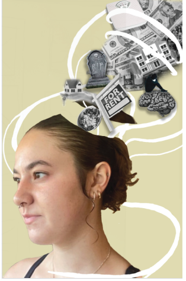

Programs Used:
- Adobe Photoshop
- Adobe Indesign
- Adobe Illistrator
- Procreate
This Piece Was created about a short story about two lovers with a forbiden love. The only way they can see eachother is on clear days with a bridge of magpies like depicted in this piece. It was created with Procreate, Photoshop, and Indesign
This Was a creation to advertise disneys wish. This was created in Procreate and Photoshop
This piece was created for a book called " The world as we Knew It" The story is about the moon getting knocked closer to the earth causing many world altering events. This piece was created in Procreate, Photoshop, and Indesign.

This is one of my pieces from my Glowild appearl for the KC Zoo's Glowild show. This design depicts a chinese dragon like from the lantern show itself. This was created in Procreate and Photoshop.
This is a two page spread for the phantom of the opera book. This was created in Procreate, Photoshop, and Indesign
This Was a portion of my Glowild appearl but this is the jungle/ snake theme. This was created in Procreate and Photoshop
This was a portion of my Glowild appearl. This is the aquarium design which includes jellyfish and a custom type. This was made in Procreate and Photoshop
These two collages go togther. They show the changing mindset and mental health that a person goes through when transitioning from child to adult. This ws made in Photoshop